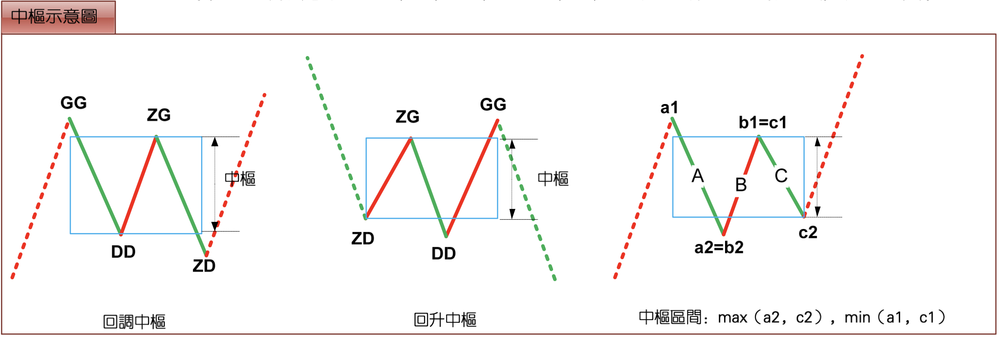
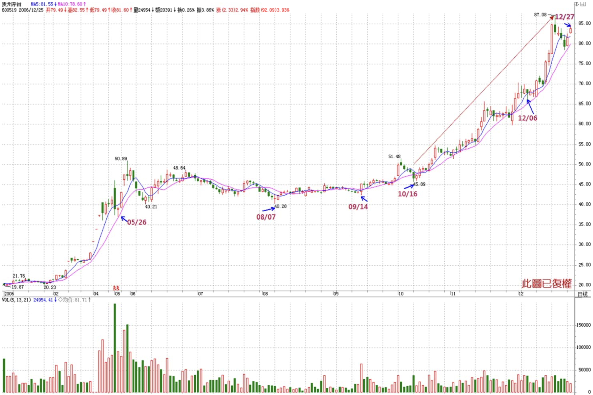
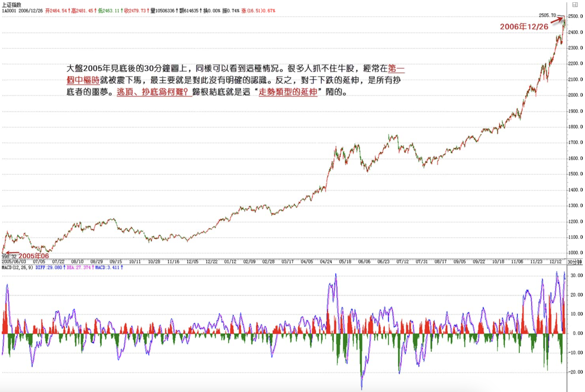

教你炒股票18：不被面首的雏男是不完美的。
2006/12/26 15:05:58
首先把前面一些最基本的概念、原理、定理列举如下：
走势：打开走势图看到的就是走势。走势分不同级别。 走势类型：上涨、下跌、盘整。 趋势：上涨、下跌。
缠中说禅走势中枢：某级别走势类型中，被至少三个连续次级别走势类型所重叠的部分。具体的计算以前三个连续次级别的重叠为准，严格的公式可以这样表示：次级别的连续三个走势类型A、B、C，分别的高、低点是a1\a2,b1\b2,c1\c2。则，中枢的区间就是（max（a2,b2,c2），min（a1,b1,c1））而实际上用目测就可以，不用这么复杂。注意，次级别的前三个走势类型都是完成的才构成该级别的缠中说禅走势中枢，完成的走势类型，在次级别图上是很明显的，根本就不用着再看次级别下面级别的图了。

缠中说禅盘整：在任何级别的任何走势中，某完成的走势类型只包含一个缠中说禅走势中枢，就称为该级别的缠中说禅盘整。
缠中说禅趋势：在任何级别的任何走势中，某完成的走势类型至少包含两个以上依次同向的缠中说禅走势中枢，就称为该级别的缠中说禅趋势。该方向向上就称为上涨，向下就称为下跌。注意，趋势中的缠中说禅走势中枢之间必须绝对不存在重叠。
“缠中说禅技术分析基本原理一”：任何级别的任何走势类型终要完成。 “缠中说禅技术分析基本原理二”：任何级别任何完成的走势类型，必然包含一个以上的缠中说禅走势中枢。 “缠中说禅走势分解定理一”：任何级别的任何走势，都可以分解成同级别“盘整”、“下跌”与“上涨”三种走势类型的连接。 “缠中说禅走势分解定理二“：任何级别的任何走势类型，都至少由三段以上次级别走势类型构成。
原理一“任何级别的任何走势类型终要完成”，这最简单的话，却包含着技术分析最基本的东西，其哲学和灵魂都在此，否则就不可能被列为原理一了，这是最重要的。一个最简单的问题，如何判断一个走势类型完成了？这是技术分析里最核心的问题之一，例如，一旦判断知道了 “下跌”的结束，就知道随后必须要面对的是“盘整”与“上涨”，而后两种走势，对于多头来说，都必然产生利润，唯一区别，就是大小与快慢的问题。如果在市场中能找到一种百分百确定的赢利模式，那就是最伟大的成就了，至于大小、快慢，可以继续研究出新的标准来进行判断，而在逻辑上，这是后话了。
这里最大的也是唯一的难点在于“走势类型的延伸”。例如一个盘整，三个重叠的连续次级别走势类型后，盘整就可以随时完成，也就是说，只要三个重叠的连续次级别走势类型走出来后，盘整随时结束都是完美的，但这可以不结束，可以不断延伸下去，不断围绕这缠中说禅中枢上上下下地延伸下去直到无穷都是可以的。这有点像一个雏男在某种标准达到后就具有立刻成为面首的条件，随时可以被面首，但却也可以一直坚持下去，一直自我封闭，一直不让消费，最后把自己给浪费掉了，直到最后变成一个烂苹果。
同样，面对趋势，形成两个依次同向的缠中说禅走势中枢后，任何趋势都可以随时结束而完美，但也可以不断地延伸下去，形成更多的中枢。这种情况在实际操作中太常见了，如果这趋势是向上的，会不断上涨，看看600519之类的图，如果把复权算上，就可以看到一个标准的不断延伸的上涨。大盘2005年见底后的30分钟图上，同样可以看到这种情况。很多人抓不住牛股，经常在第一个中枢时就被震下马，最主要就是对此没有明确的认识。反之，对于下跌的延伸，是所有抄底者的噩梦。逃顶、抄底为何难？归根结底就是这“走势类型的延伸”闹的。


如何判别“走势类型延伸”是否结束？这里，必须首先搞清楚，“走势类型延伸”的实质是什么？对于趋势来说，其“延伸”就在于同级别的同向“缠中说禅走势中枢”不断产生；而对于盘整来说，其“延伸”就在于不能产生新的“缠中说禅走势中枢”。由于“走势类型延伸”意味着当下的“走势类型”随时可以完成，因此相应的“类型”必然是确定的，因此“走势类型延伸”是否结束的判断关键就在于是否产生新的“缠中说禅走势中枢”。此外，由于趋势至少包含两个“缠中说禅走势中枢”，而盘整之有一个，因此趋势与盘整的判别关键也就在于是否产生新的“缠中说禅走势中枢”。由此可见，“缠中说禅走势中枢”的问题是技术分析中的核心问题，该问题一旦解决，很多判断上的大难题也将引刃而解。
“缠中说禅走势中枢定理一”：在趋势中，连接两个同级别“缠中说禅走势中枢”的必然是次级别以下级别的走势类型。
用反证法，该定理的证明是很简单的，而这也回答了上一章中的作业一“连接两相邻同级别缠中说禅走势中枢的一定是趋势吗？一定是次级别的趋势吗？”首先，这不必然是趋势，任何走势类型都可能，最极端的就是跳空缺口后形成新的“缠中说禅走势中枢”；其次，也不一定是次级别的，只要是次级别以下，例如跳空缺口，就属于最低级别，如果图上是日线、周线，就不会是次级别了；最后，往往相连走势类型的级别越低，表示其力度越大，这也就是为什么缺口在分析中有比较强技术含义的理论依据所在。
由定义知道，“缠中说禅走势中枢”的产生原因以及判断标准，也就是其“生”问题已经解决，那余下的就是其“住、坏、灭”的问题。也就是说，一个“缠中说禅走势中枢”是如何“维持”以及最终被“破坏”进而废弃的。先考虑其“维持”的问题。维持“缠中说禅走势中枢”的一个充分必要条件就是任何一个离开该中枢的走势类型都必须是次级别以下的并以次级别以下的走势类型返回，该问题很容易证明，因为无论是离开还是返回，只要是同级别的走势类型，就意味着形成新的“缠中说禅走势中枢”，这与原中枢的维持前提矛盾。该命题表述成如下定理：
“缠中说禅走势中枢定理二”：在盘整中，无论是离开还是返回“缠中说禅走势中枢”的走势类型必然是次级别以下的。
由此，上一章作业三“盘整的高低点是如何造成的”就有了相应的答案：无论离开与返回的走势类型是何种级别的，在站最低级别上看，例如把1分钟图当成最低级别，那么最后连接离开与返回走势类型连接处的最低级别图，只能有两种可能：三根以上1分钟K线的来回重叠震荡后回头；二、1分钟K线无三根以上K线重叠的V型走势。对于第一种情况，这几根重叠K线最极端那根的极端位置，就构成盘整中的高低点，一般来说，这种情况比较少见；对于第二种情况，这个V型尖顶那根K线的极端位置就构成盘整中的高低点，这种情况十分常见。这也是为何真正的低点和高点总是盘中一闪而过的理论依据。本ID的理论能解释技术图表上任何细致的问题，这才是一种真正理论所应该具有的品质。这种的理论，不需要什么诺贝尔的奖励，那一百万美圆在市场上算得了什么？精通这样的理论，市场会给予你多得多的回报。
有了上面两个“缠中说禅走势中枢”定理，不难证明定理三：
某级别“缠中说禅走势中枢”的破坏，当且仅当一个次级别走势离开该“缠中说禅走势中枢”后，其后的次级别回抽走势不重新回到该“缠中说禅走势中枢”内。
这定理三中的两个次级别走势的组合只有三种：趋势+盘整，趋势+反趋势，盘整+反趋势。其中的趋势分为上涨与下跌，分别代表从上方突破与下方跌破两种情况。而站在实用的角度，最用力的破坏，就是：趋势+盘整。例如在上涨中，如果一个次级别走势向上突破后以一个盘整走势进行整理回抽，那其后的上涨往往比较有力，特别这种突破是在底部区间。这种情况太常见了，其理论依据就在这里。
回复
缠中说禅 2006/12/26 15:09:24
对不起，有一个重要的谈判，要去中关村，必须马上走，有问题请放在这，晚上回来回答。
缠中说禅 2006/12/26 15:12:05
大盘现在的走势十分正常，96年那次，发展涨了N倍了，很多股票都没涨，工行现在连一倍都没到，算得了什么？成分股就是牛市第一轮的最重要股票，多次说了，就不要埋怨了。
下了，再见。
缠中说禅 2006/12/26 21:28:26
今天回来太晚了，各位好好自己研究一下，别没怎么认真思考就随便发问，这样是学不到东西的。
晚安，再见。